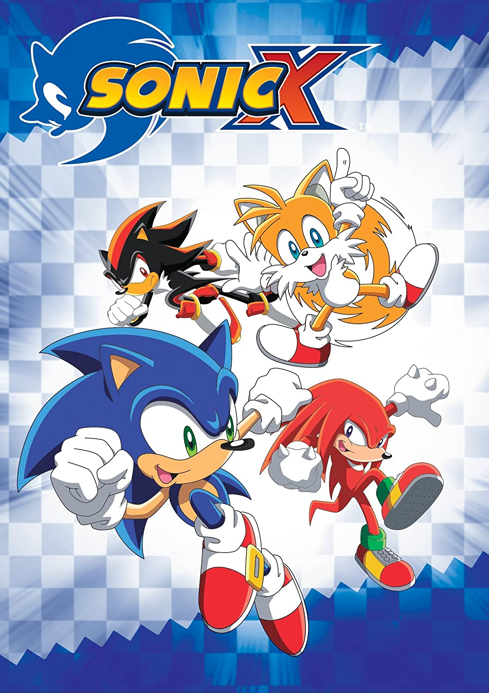

Sonic Movie

Сюжет
Сонік приходить додому до своєї Сови. Але за ним прийшли Єхидни.
У погоні Сова захищає Соніка і телепортує його на Землю.
Проходить декілька років. Сонік засмученій і починає швидко бігати.
Настільки сильно, що аж був вибух.По усьому всіту вимкнувлось світло.
Політики найняли Доктора Робітника для того, щоб він дізнався
ізза чого це сталось. Сонік тікає у дім де там він зустрічає Тома.
Сонік загубив свої кільця на криші діма у нью йорці.
Сонік і том намагаються туди доїхати.
У кінці фільма проходить битва між Соніком і Еггманом,в ході цього
Еггман попадає у світ грибів.
Sonic X

Сюжет
Сезон 1
Сонік атакує базу Еггмана, щоб врятувати Крім, але база вибухнула
і телепортувалась у світ людей.Перший сезон розповідає про шукання
смаргдів хаоса і вигравання Еггмана.
Сезон 2
Другий сезон розповідає арку про сюжет Сонік адвенчур 1 і 2, і Сонік файтерс.
У кінці Сонік телепортується назад на Мобіус(планету Соніка).
Сезон 3
Супер Сонік літає по космосу і натикається на Метарекса.
Супер Сонік програє і падає на Мобіус.Тейлз зустрічає
Космо яка прибула з другої планети, щоб знайти героя який зможе
зупинити Метарексів які винищують планети.Сонік зустрічає Тейлза
і вони збирають команду для того, щоб полетіти зупиняти Метарексів у космосі.
Третій сезон розповідає про подорож у космосі і вигравання Еггмана і Метарексів.
У кінці Тейлз убиває свою любовь Космо для того, щоб виграти Метарексів.
Після чого усі повертаються на Мобіус.